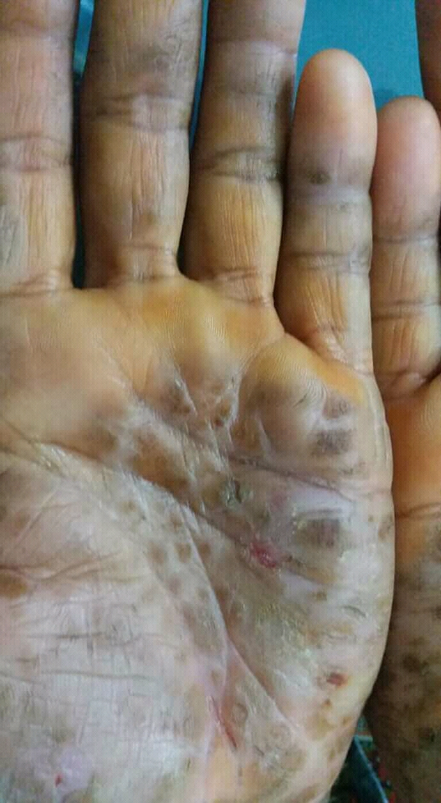

Homem de 60 anos, disfagia há 8 anos que piorou muito em 3 meses. Perdeu 20 kg. A branquinha já não desce. O que ele tem?
Sr. Aurelino: a disfagia que não parou
Cada detalhe da história é uma pista
Esse é o Sr. Aurelino, e o caso dele vai costurar toda a aula. Cada peça da história — a profissão, a origem, o tempo de evolução, o pé cascudo — é uma pista que vamos usar. Guarde o caso; voltaremos a ele no fim.
- Emagrecido, afebril, anictérico, hipocorado (3+/4+).
- Ectoscopia: hiperceratose palmoplantar (tilose) — pele palmoplantar espessada, "cascuda", acompanhada há anos.
Síndrome consumptiva: o organismo sendo consumido
Antes de qualquer hipótese, repare no estado geral. O Sr. Aurelino está em síndrome consumptiva — o nome diz o que acontece: uma doença que consome o paciente. Emagrecimento, fraqueza, palidez por anemia (hipocorado 3+/4+), perda progressiva de massa. É o organismo sendo gasto por dentro, e é um dos retratos mais constantes da oncologia do tubo digestivo.
Guarde isto como regra de fundo: quase todo tumor do tubo digestivo emagrece — esôfago, estômago, cólon, pâncreas, fígado. O tumor tira a vontade de comer (anorexia) ou impede fisicamente a alimentação, como aqui, em que a disfagia fecha a passagem. Perda de peso, portanto, não é detalhe: é a assinatura comum desses cânceres.

Por que a história não para na acalásia
Uma disfagia que se arrasta por anos, para sólidos e líquidos, com regurgitação de alimentos não digeridos, tem um suspeito clássico: acalásia. E há uma pista plantada de propósito — interior de Minas Gerais. Embora a acalásia idiopática seja a mais comum no geral, a origem rural mineira aponta para a acalásia chagásica (doença de Chagas destruindo o plexo de Auerbach). Uma banca não escreve "interior de Minas" à toa.
Só que a história não para aí — e é exatamente o excesso de pistas que muda o raciocínio. Idoso, em síndrome consumptiva, etilista, e com tilose (queratodermia palmoplantar hereditária, que aumenta a proliferação de células escamosas pelo corpo). Se o caso terminasse na disfagia crônica, dava para parar na acalásia. Mas cada camada nova de informação — emagrecimento acelerado, álcool, pele palmoplantar cascuda — empurra o ponteiro para câncer de esôfago. A acalásia não é descartada: ela vira, na verdade, mais um fator de risco sobreposto.
A invasão comanda a conduta — e a clínica já aponta o tipo
Idoso + síndrome consumptiva (emagrecimento, fraqueza, anemia — o organismo sendo consumido) + tilose (doença hereditária que aumenta a proliferação de células escamosas) + etilismo. Esse conjunto empurra o raciocínio para câncer de esôfago.
Quiz — fixação
-
Qual achado do caso mais fortemente sugere a etiologia escamosa?
Gabarito: A. A tilose — queratodermia palmoplantar hereditária — é um marcador que aponta diretamente o tipo histológico escamoso, porque aumenta a proliferação de células escamosas; somada a etilismo e perda ponderal, fecha o raciocínio para CEC. A idade isolada (B) é inespecífica: não distingue escamoso de adeno nem confirma neoplasia, é só fator de fundo. A ausência de icterícia (C) apenas afasta obstrução biliar e não diz nada sobre a histologia — é um achado neutro para esta pergunta.
Por que cair na B: idade avançada é fator de risco real, e quem confunde fator de risco com pista diagnóstica marca "idade" — mas idade sozinha não aponta escamoso nem adeno. Por que cair na C: "anictérico" parece um dado relevante porque chama atenção no enunciado, mas só serve para afastar via biliar; é ruído para definir o tipo de câncer de esôfago.
-
O que melhor explica a perda de 20 kg do Sr. Aurelino, dentro da lógica dos tumores do tubo digestivo?
Gabarito: A. A perda ponderal traduz a síndrome consumptiva — o organismo sendo gasto por dentro: o tumor tira a vontade de comer (anorexia) e, no esôfago, ainda fecha fisicamente a passagem do alimento (disfagia). Por isso quase todo tumor do tubo digestivo emagrece. "Achado raro/atípico" (B) inverte a verdade: o emagrecimento é a assinatura mais constante desses cânceres, não a exceção. "Exclusiva da anemia" (C) reduz a um único fator — a anemia compõe o quadro, mas não é a causa central da perda de 20 kg.
Por que cair na B: quem associa perda de peso a doenças endócrinas ou raras pode achá-la "atípica" no câncer, ignorando que ela é justamente o retrato comum da oncologia digestiva. Por que cair na C: "hipocorado 3+/4+" salta aos olhos no enunciado e seduz quem fixa um único dado, mas anemia e emagrecimento são faces da mesma síndrome consumptiva — uma não explica sozinha 20 kg.